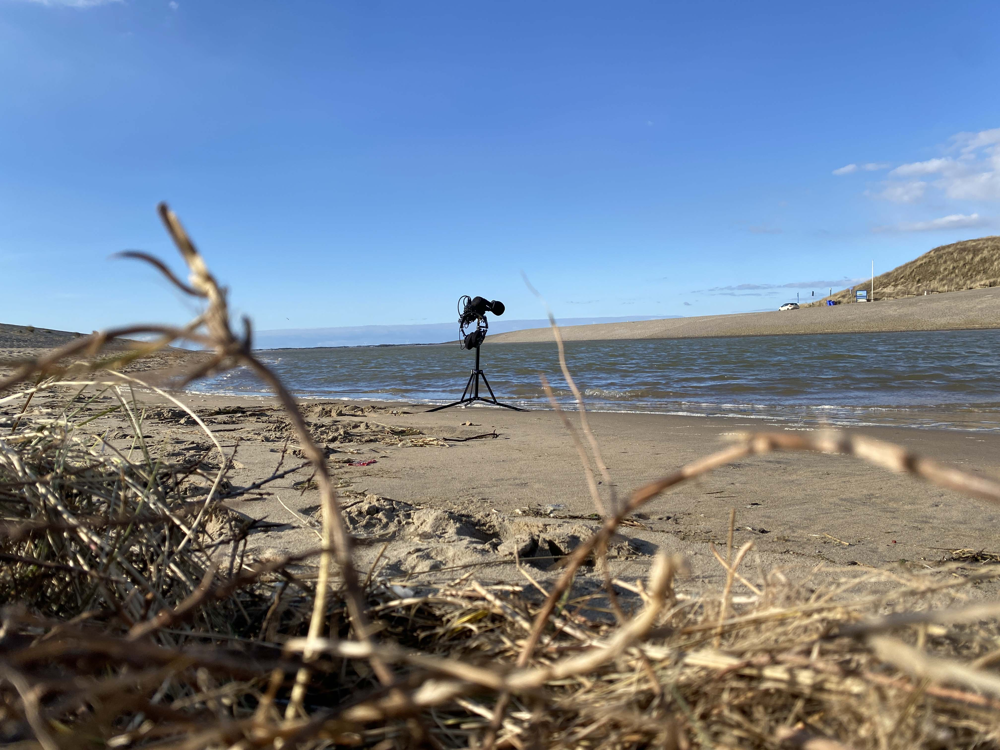
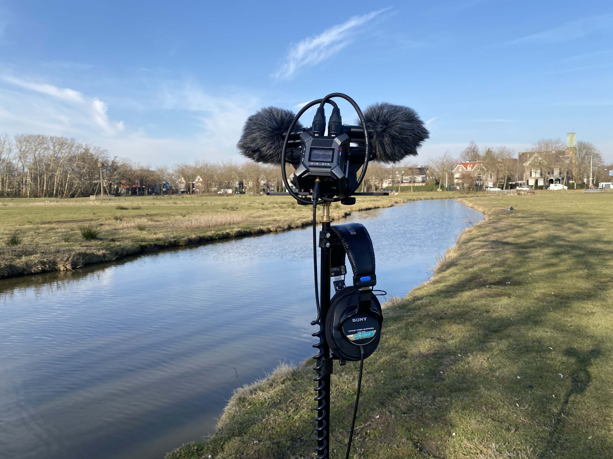

Welcome to my diary where I share my early adventures in field recording. I’m still learning and only have a few sessions under my belt, but I’m passionate about capturing nature’s sounds—even if they aren’t perfect.
Field Recording at Katwijkse Uitwatering: Where Sweet Water Meets Salt and Wind
Posted on March 14, 2025
Today, I set out to try capturing the unique soundscape of Katwijkse Uitwatering, where the fresh flow of the Old Rhine meets the salty sea. Using my Zoom F3 and Line Audio CM4 microphones in an ORTF configuration, I was excited to learn and record every little sound I could.
Even though it was a bright, sunny day, the chilly wind and biting cold proved tougher than I expected. I aimed my microphones carefully at the soft whispers of the waves, but my tripod’s feet kept sinking into the soft, almost quicksand-like ground.
I wasn’t sure whether to record the loud crash of the waves on the dock or the gentle murmur as they reached the sandy outlet. My Movo windscreens did the best they could, though not perfectly, and I had to experiment with my setup.


At one point, I even waded into the water—even though my Meindl boots quickly filled—reminding me that sometimes, as a beginner, you have to take small risks to capture something unique.
During the session, a small idea struck me: why not record the sound of wind sweeping sand off the pavement? I moved my tripod a few times as the conditions changed, and it made me wonder if the wind is more of a challenge or a helper in field recording.
Field Recording at Strand Wassenaarseslag: Capturing Waves and Foam
Posted on March 12, 2025
Today, I ventured out to Strand Wassenaarseslag and immersed myself in the rhythms of the sea. At first, I was a little worried that the strong tide and gusty winds might tip over my tripod, but the calm, reflective atmosphere soon eased my fears.
I set up my simple rig—a Zoom F3 with Line Audio CM4 mics in an ORTF configuration on my Manfrotto 5001B Nano Stand—and even tried the new Movo WST50 Ballistic Nylon Windscreens, which worked better than my old ones. I even thought of a few ideas to try in the future—like adding a hook for my headphones or experimenting with remote listening from a few meters away.
As I recorded, the ocean’s deep, rolling rhythm blended with the soft hiss of foam breaking on the shore, even as a light rain started. It felt like a beautiful melody that filled the space with raw energy, and I was thrilled to capture it.
After around 45 minutes of recording, I sat on the damp sand and just listened to the pure sound of the sea. It reminded me that sometimes, not worrying about perfection helps you capture the most genuine moments.
Field Recording at Landje van Bremmer: Practical Challenges & Clear Insights
Posted on March 6, 2025
My very first field recording session at Landje van Bremmer was quite the adventure. I even had to hop a fence (and avoid a possible run-in with an upset farmer) just to reach the spot. It was a little nerve-wracking but also very exciting.
The field was muddy and had a few curious sheep wandering around, which made the day feel charming in an unexpected way. One tip I learned the hard way: avoid wearing jeans in these conditions—they get soaked really fast!
Although I was initially worried about the wind affecting my recordings, I managed to reduce some of the low-frequency noise in post-production with a high-pass filter. Setting up my familiar rig—a Zoom F3 with Line Audio CM4 mics in ORTF on my Manfrotto 5001B Nano Stand, along with WS8 Rode windscreens—helped me focus on capturing the moment.
The soundscape was full of life—with geese honking, reeds rustling, and a mix of other natural sounds layering together. As a beginner, it was fascinating to notice all these little details.


In the end, this session taught me to embrace the unpredictable nature of field recording and that perfection isn’t everything. It was a reminder that capturing real, unedited moments is what truly matters.